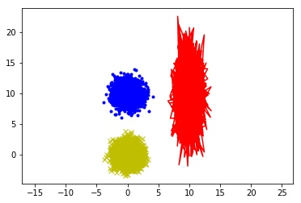

Several Examples that use anomaly detection:
- Fraud detection:
- \(x^{(i)}\) = features of user \(i\)'s activities
- Model \(p(x)\) from data
- Identify unusual users by checking which have \(p(x)< \varepsilon\)
- Monitoring computers in a data center:
- \(x^{(i)}\) = features of machine
- \(x_1\) = memory use
- \(x_2\) = number of disk accesses/sec,
- \(x_3\) = CPU load
- \(x_4\) = CPU load/network traffic.
Gaussian distribution
Gaussian distribution, also called normal distribution, is a very common continuous probability distribution.
The normal distribution is often referred to as \(N(\mu, \sigma^2)\), Thus when a random variable \(X\) is distributed normally with mean \(\mu\) and variances \(\sigma^{2}\), one may write
\[X\sim N(\mu, \sigma^2)\]
The probability density of the Gaussian distribution is:
\[p(x;\mu, \sigma^2)=\frac{1}{\sqrt{2\pi}\sigma}\exp(-\frac{(x-\mu)^2}{2\sigma^2})\]
where:
* \(\mu\) is the mean or expectation of the distribution
* \(\sigma\) is the standard deviation
* \(\sigma^2\) is the variance

Standard normal distribution
standard normal distribution is a special case when \(\mu=0, \sigma=1\), its probability density function(the red line in the figure) is as follows,
\[\varphi(x)=\frac{1}{\sqrt{2\pi}}e^{-\frac{1}{2}x^2}\]
Anomaly Detection Algorithm
Training set: \(\{x^{(1)},...,x^{(m)}\}\)
Each example is \(x\) in \(R^n\)
- Choose features \(x_i\) that you think might be indicative of anomalous examples.
- Fit parameters \(\mu_1,...,\mu_n, \sigma_1^2,...,\sigma_n^2\)
- Given new example \(x\), compute \(p(x)\): \[p(x) = p(x_1;\mu_1, \sigma_1^2)p(x_2;\mu_2, \sigma_2^2)...p(x_n;\mu_n, \sigma_n^2)= \Pi_{j=1}^np(x_j;\mu_j, \sigma_j^2)\] Anomaly if \(p(x)<\varepsilon\)
Choosing features
Plotting histogram for each feature to check if it is gaussian. We can take transforms (such as log) if the result shows non-gaussian features:
import matplotlib.pyplot as plt
import numpy as np
%matplotlib inline
mu, sigma = 0, 1
# Draw random samples from a normal (Gaussian) distribution.
x = np.random.normal(mu,sigma,10000)
plt.hist(x, 50)
plt.show()
Multivariable Gaussian Distribution
Multivariable Gaussian Distribution has two parameters \(\mu\in R^n\) and \(\Sigma \in R^{n\times n}\):
\[p(x;\mu,\Sigma) = \frac{1}{(2\pi)^{\frac{n}{2}}|\Sigma|^{\frac{1}{2}}}e^{-\frac{1}{2}(x-\mu)^T\Sigma^{(-1)}(x-\mu)}\]
Understanding
Following examples illustrate the basic meaning of parameters in multivariable gaussian distribution:
mean = [0, 0]
cov = [[1, 0], [0, 1]] # diagonal covariance
# Draw random samples from a multivariate normal distribution
x, y = np.random.multivariate_normal(mean, cov, 5000).T
plt.plot(x, y, 'x',color='y')
plt.axis('equal')
plt.hold
# change mean
mean = [0, 10]
x, y = np.random.multivariate_normal(mean, cov, 5000).T
plt.plot(x, y, '.', color='b')
# change variances
mean = [10, 10]
cov = [[1, 0], [0, 10]] # diagonal covariance
x, y = np.random.multivariate_normal(mean, cov, 5000).T
plt.plot(x, y, '-', color='r')
plt.show()

Anomaly Detection Algorithm using multivariable gaussian distribution
- Fit model \(p(x)\) by Parameter fitting: Given training set \(\{x^{(1)},x^{(2)},...,x^{(m)}\}\) \[\mu=\frac{1}{m}\sum_{i=1}^mx^{(i)}\\ \Sigma=\frac{1}{m}\sum_{i=1}^m(x^{(i)}-\mu)(x^{(i)}-\mu)^T \]
- Given a new example \(x\), compute \(p(x)\) and flag an anomaly if \(p(x) < \varepsilon\)